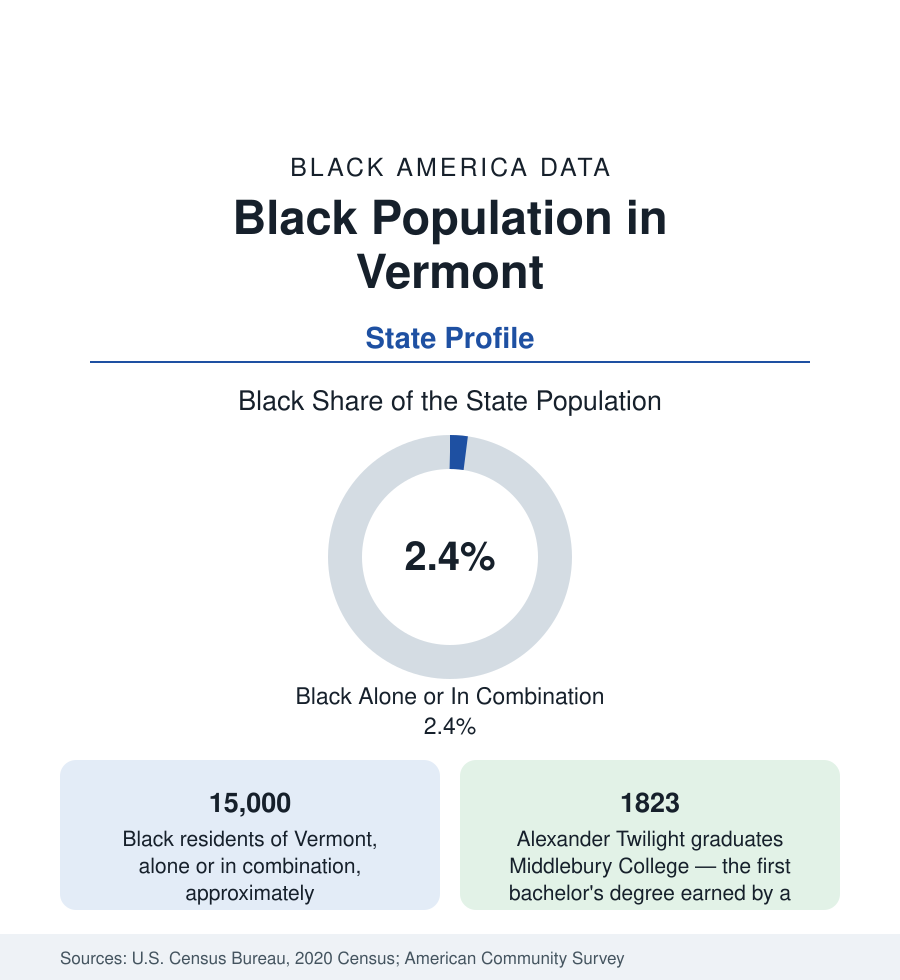

Black Census
Black Population in Vermont: The First Graduate's State
About 15,000 Black Vermonters — one in forty residents — in the state that produced America's first Black college graduate. The census profile.

Vermont holds about 15,000 Black residents — Black alone or in combination — roughly one in forty of its people, with Black alone at about 9,500, or 1.5 percent. It is one of the smallest Black populations in this reference, and it contains one of the largest historical facts in the education data: the first bachelor's degree earned by a Black American was awarded in Vermont, in 1823. The modern population is centered in the Burlington metro and shaped, in its newest layer, by refugee resettlement in Burlington and Winooski.
Alexander Twilight and the Early Record
Alexander Twilight — Middlebury College class of 1823, schoolmaster, minister, and the first Black American to serve in a state legislature (Vermont's, from 1836) — built the Old Stone House in Brownington that now anchors the state's Black heritage trail. He is the most famous figure of an early Black Vermont that also included the Pullman-porter and farm families of the Connecticut River valley, the Black congregations of Burlington and Rutland from the early nineteenth century, and Rutland's and Woodstock's small Black communities around the resort and rail economies. Vermont's constitutional abolition of adult slavery (1777, the first of the American states) framed the free community's entire history — a fact the state's Black heritage institutions document, alongside the complications (child indenture persisted; the Underground Railroad ran through the farm country) the honest record includes.
The Modern Map: Burlington and Resettlement
The modern population is a Burlington-metro population above all. Burlington itself is roughly 5 to 6 percent Black, and its sister city Winooski — the old mill city across the river — records a Black and African share among the highest in northern New England relative to its size, built by Vermont's role as a refugee-resettlement state: Somali, Sudanese, Congolese, Burundian, and Bhutanese (counted separately in the Asian data) communities settled from the 1990s onward in the Burlington-Winooski corridor and, in smaller numbers, in Rutland and Brattleboro. The resettlement pattern makes Vermont's Black population among the most foreign-born in the nation in percentage terms, and its second generation the defining cohort of the Burlington school district's diversity data — in the state's largest school systems, Black students form shares several times the state average.
The Rest of the State
Outside Chittenden County, Black Vermont thins to the nation's minimum: the Northeast Kingdom, the southern valleys, and the mountain towns record Black populations in the dozens to low hundreds per county, composed of individual families, the college towns' communities (Middlebury, Bennington, Norwich), and the small historic congregations. The university layer — the University of Vermont in Burlington enrolls the largest Black student population in the state, at a share in the low single digits — functions as one of the community's principal institutions by default, as in the other small-population states of this reference (Maine, New Hampshire, the Dakotas), alongside the Black church network and the state's African community associations.
Indicators in a Small Population
Small-population statistics carry wide margins, and this reference reports Vermont's with that caution attached: the survey estimates show Black Vermonters' incomes and attainment near or above the state's overall figures in some years (the refugee and university populations pulling in opposite directions within the same small sample), homeownership below the state's famously high rate, and poverty elevated in the resettlement communities' first years. The trend lines are more reliable than the levels: the population is growing — among the faster percentage growth rates in New England from the smallest base — driven by resettlement and the Burlington economy's pull.
Reading the Vermont Numbers
The state's Black heritage infrastructure has grown with the population: the Vermont African American Heritage Trail links the Twilight homestead, the Rokeby Museum's Underground Railroad site (the Robinson family's farm, among the best-documented stations in the North), and the Burlington and Rutland congregations into one of the most complete small-state trails in the nation — the institutional form the community's history takes when its population is small and its record is long.
Vermont's profile is the reference's limiting case: 15,000 people, one foundational graduate, one resettlement corridor. Its data teach the reader the small-population discipline — wide error bars, single communities dominating the totals — and its history insists on its place regardless: the first degree in Black America's education data was earned in these hills.
More in Black Census
The Black Population of the United States: Size, Definitions, and Distribution
The Black population of the United States totals 52.8 million — 15.4 percent of the nation. How the Census Bureau defines and counts the population, and where it lives.
Black Median Household Income in the United States
Black median household income stands at $56,490 in the Census Bureau's annual income report — how the figure is measured, how it compares, and what drives it.
The Black Poverty Rate: Levels, Children, and the Long Trend
The official Black poverty rate is 17.1 percent — against 11.1 percent nationally and 7.7 percent for non-Hispanic White Americans. How poverty is measured and what the data show.
Source: U.S. Census Bureau, 2020 Census; American Community Survey; Population Estimates Program.